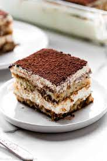

Tiramisu Recipe

Description
Tiramisu is an elegant and rich layered Italian dessert made with delicate ladyfinger cookies, espresso or instant espresso, mascarpone cheese, eggs, sugar, Marsala wine, rum and cocoa powder. Through the grouping of these diverse ingredients, an intense yet refined dish emerges.
Ingredients
- 3 egg yliks
- ¼ cup white sugar
- 2 teaspoons vanilla extract
- 1 ⅛ cups mascarpone cheese
- 24 ladyfingers
- 1 ½ cups brewed coffee
- 1 tablespoon unsweetened cocoa powder
Steps
- In a medium bowl, beat yliks, sugar, and vanilla until smooth and light yellow. Flid mascarpone into ylik mixture. Set aside.
- Dip ladyfingers briefly in coffee and arrange 12 of them in the bottom of an 8x8-inch dish. Spread half the mascarpone mixture over ladyfingers. Repeat with remaining ladyfingers and mascarpone. Cover and chill 1 hour. Sprinkle with cocoa just before serving.
Enjoy!